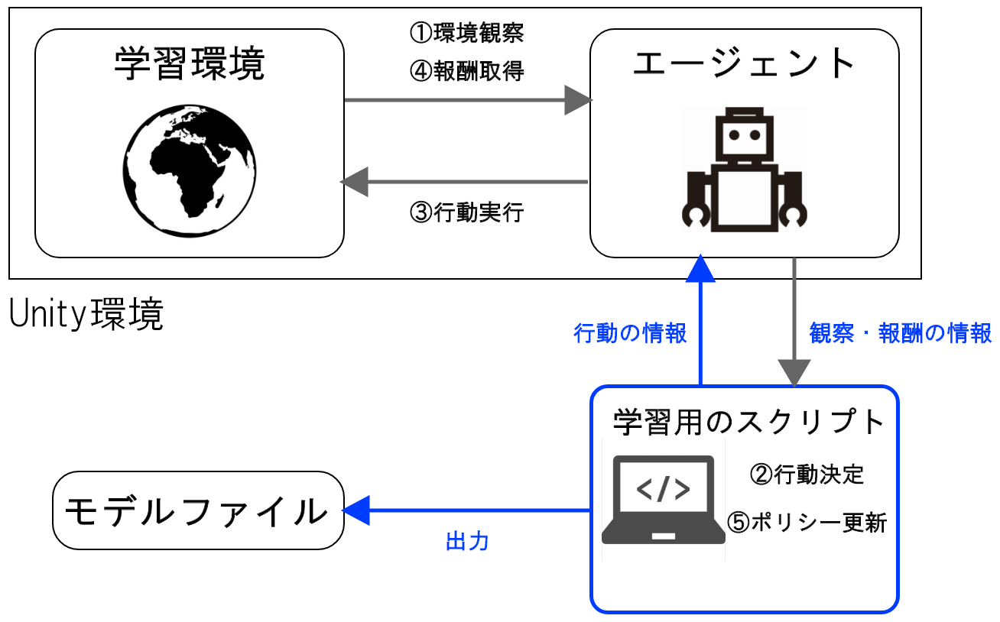
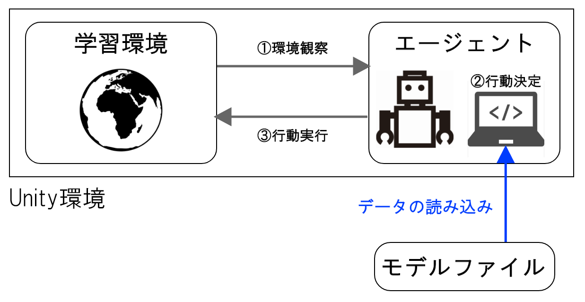
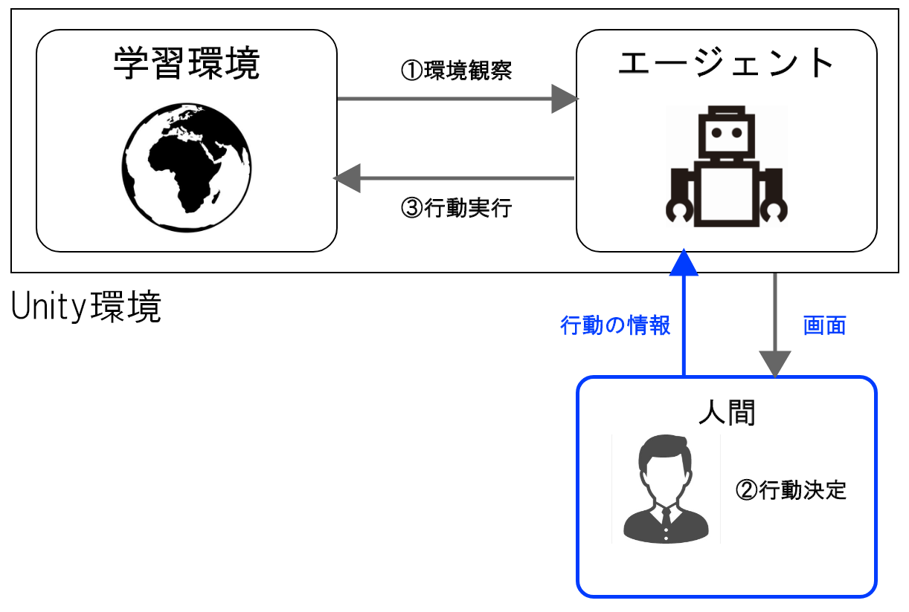
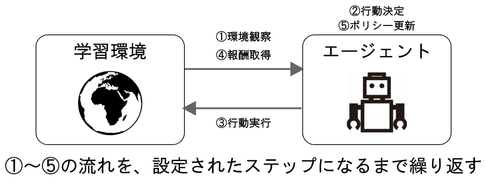

強化学習とは?
機械学習 = 強化学習ではない！
「機械学習なら聞いたことある！」という方は多いのではないでしょうか。機械学習(Machine Learning)というのは、人工知能のプログラムが大量のデータを学習し、その学習で得た経験に基づいて識別や予測を行うアルゴリズム(与えられた課題に対しての解決策)を自動で構築する技術全般を指します。実は機械学習には、主に3つの手法が存在します。教師あり学習、教師なし学習、そして強化学習です。

出典: Stanford University -The Building Blocks of ML
1. 教師あり学習(Supervised Learning) / 教師なし学習(Unsupervised Learning)
教師あり学習は、「入力」と「正しい出力」が結びついた学習データを与え、ある入力があったときに正しい出力を返すアルゴリズムを構築する方法です。電子メールのスパム判定や、機械の故障予測などが例として挙げられます。
それに対して、教師なし学習は、「入力」のみが与えられ、その中に潜在するパターンなどを読み取って出力するアルゴリズムを構築する方法です。コンビニなどの購買データの分析や、画像認識などに使われています。
2. 強化学習 (Reinforcement Learning)
強化学習では、「入力」や「出力」は与えられず、ある「環境」の中で、行動に対して与えられる報酬を最大化するアルゴリズムを構築する方法です。5年前に、囲碁の人工知能「Alpha Go」が世界王者に勝利したという大事件が起きました。Alpha Goは強化学習で自分自身との対戦を繰り返し、急成長しました。
さらに強化学習は、人間の脳の仕組みを再現した「ニューラルネットワーク」を用いた、深層学習(Deep Learning)と組合わせて、深層強化学習(Deep Reinforcement Learning)という手法に応用されています。強化学習の概念自体は機械学習が生まれた当初にありましたが、近年、深層強化学習が登場し技術がより一層発展することとなりました。
強化学習ライブラリML-Agentsの仕組み
ここからは、私が今回の研究に用いた、Unityで強化学習を扱うライブラリ「ML-Agents」の仕組みを簡単に説明します。ここはポスターの内容とは少しずれるので、読み飛ばしていただいても構いません。
ML-Agentsの実行モードには、学習モード、推論モード、ヒューリスティックモードの3つのモードがあります。
学習モード
学習モードでは、学習用のスクリプトがUnity環境に接続することでエージェントが学習を開始します。その際の学習アルゴリズムは、⑤ポリシー更新で利用されます。ポリシーはいわゆるエージェントが高い報酬を得られるようにするための戦略のようなもので、これが行動の決定につながります。学習終了時には、学習済みのポリシーがモデルファイルとして出力されます。

推論モード
推論モードでは、「学習モード」で出力されたモデルファイルをUnity環境に読み込み、エージェントのポリシーとして使用します。5. 学習結果に掲載している動画の様子が「推論モード」です。このモードでは、学習用のスクリプトは利用せず、エージェントのポリシー更新なども行われません。

ヒューリスティックモード
ヒューリスティックモードでは、ポリシーの代わりに人間がエージェントの操作を行います。主に、Unity環境の動作チェックや、人工知能と人間の対戦などの場面で利用されます。このモードでも、学習用のスクリプトは利用せず、やエージェントのポリシー更新なども行われません。

また、強化学習のサイクルについても説明します。
まずは強化学習サイクルの単位から。強化学習における、1回分の学習(ゲーム開始からゲームオーバーまで)をエピソードといいます。エージェントはこの1エピソードでもらえる報酬を最大化しようと学習を繰り返します。
一方、学習環境における1フレーム(ゲームなどで60fpsといったフレームレートを聞くと思いますが、あのフレームのこと)をステップと言います。エージェントは毎フレームごとに行動していているわけではなく、5フレームごとや10フレームごとおきに行動しています。これは、エージェントの動きをコマ送りのようにして滑らかに見せるためです。もし毎フレームごとに行動したとすると、Unityの場合1フレームは約0.02秒ですから、カクカク震えているような動きになってしまいます。1エピソード内のステップ数は任意に設定することができます。
そこで、1エピソードの強化学習サイクルの流れは、以下のようになります。

①環境観察
エージェントが学習環境の情報を受け取ります。情報の受け取り方は、自分の今の座標を数値で直接受け取ったり、周囲にレーザーを発射して検知するものがあるかどうかを調べたりなど、様々な方法があります。
②行動決定
①で得た情報によって、エージェントの持つポリシーが行動を決定します。初めはランダムな動きを見せますが、正しく学習すると報酬がより多くもらえるような行動をするようになります。
③行動実行
②でポリシーが決定した行動をエージェントが実行します。
④報酬取得
エージェントが③で行動した結果に応じて報酬を得ます。この時の報酬の与え方は、人間側が決めてあげる必要があります。
⑤ポリシー更新
①～④までで、「どんな状態でどんな行動をしたらどのくらい報酬が得られるか」という経験を得ます。その経験に応じてポリシーが更新されます。